Hello!!!
“Kreative Vybn with Mr Kreative”
Welcome to Kreative Vybn with Mr Kreative...I am Mr Kreative and we are VYBN “Vision Yourself Being Necessary “ We all need to do our part. Indie published author, artist & poet. I’m no Chef, I’m just Kreative. KRU LLC Kreative with a K, Vibin VYBN.. in short, it’s Creative.. find your niche, create your vibe... give others a reason to remember you by..
My Bio!!!
From a young age, Mr. Cook ... “MR. KREATIVE “ has been just that...creative. He started out through his artwork. He has followed his passion and stayed focused on it into his adult life. Some of his passions were and are as follows: poetry writing, painting, photography, songwriting, calligraphy writing, cooking and more. Over the years Mr. Cook has provided and inspired many throughout his community. His small town of Vauxhall, NJ has many talented individuals from Athletes to Doctors, from Authors to Judges and more. Mr. Cook has always been a part of this list. Humbled by our Creator...Mr. Cook has assisted the community in many ways such as programs at the local Vauxhall branch library, reading at the community daycare, the youth basketball program, church functions and programs throughout NJ. Also has and have provided food and engages with the Senior citizen programs. Mr. Cook presented his first self published book and some of his artwork at the local Vauxhall library, has displayed his artwork at several exhibitions and continues to inspire and give throughout his community and more. Wherever he goes, Mr. Cook leaves a trail of good deeds that has not gone unnoticed. His biggest influence, his Wife of 19 years Jacqueline; unfortunately transitioned on Mother’s Day 5/10/20. The 22 year union has been his biggest inspiration and influence of his adult life. It can be seen and read through his writings. Mr. Cook’s next book started out as a Cook book but has turned into a “Self help book and coping with a loss” which is currently in the works. You can hear some of his inspirational writings on his YouTube channel under Mr. Kreative. He continues to strive and walks with pride while holding his head up high, sharing love and spreading his positive energy throughout his travels and through his words... “I’m just an ordinary guy”. Live, love in life... Creatively Big blessings to all....
“Me And My Shadow”
In my shadow, there is always a place. That place is a secured place...Just as my heart it will always be your final resting space. Our journey now becomes physically mine, with pain but deep desire to continue... I pray that one day the sun will again shine...shine again with us connected together but for now my love... physically the sun will just shine on mine... but I know in my shadow... you will continue to help me face my battles like you did ...each and every time...22... 22 will always be connected to you.. our years of life we shared..22... my heart will beat double.. no other love will be compared...
In loving memory of my rock,
JACQUELINE

On my instagram shows my artwork, cooking, photography, Calligrapher, my jewelry making... embroidery... a man of many talents...
 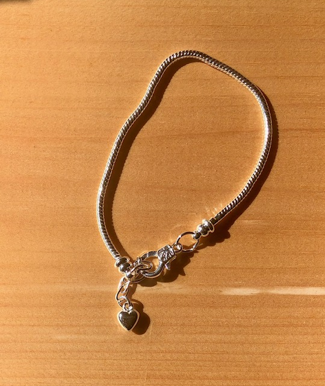
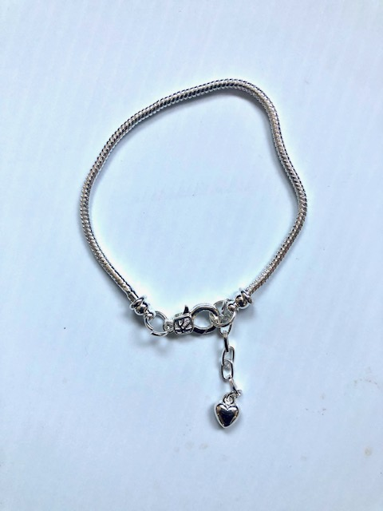
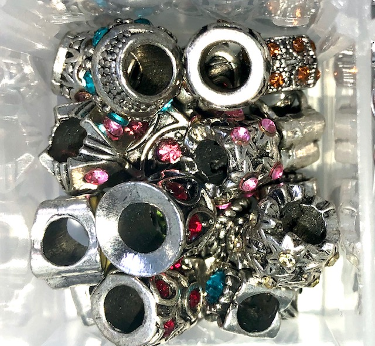
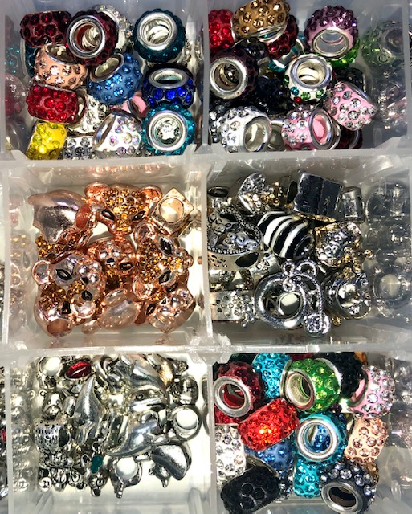
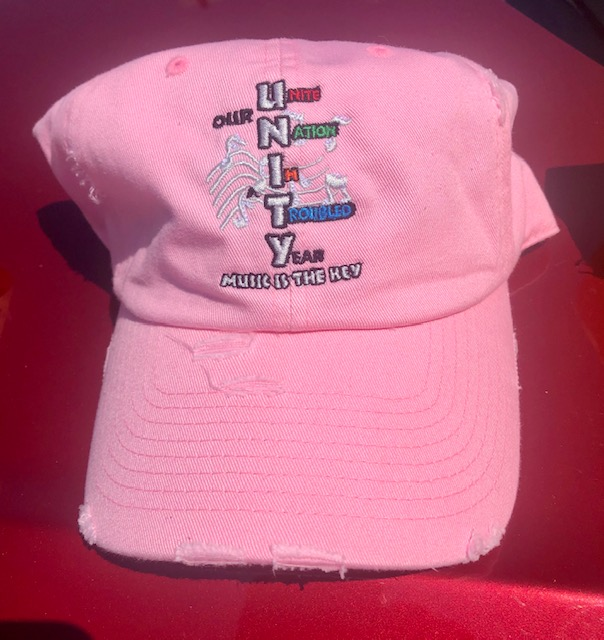
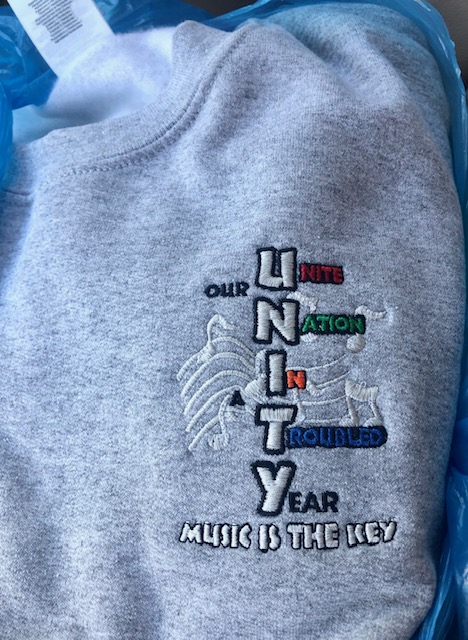
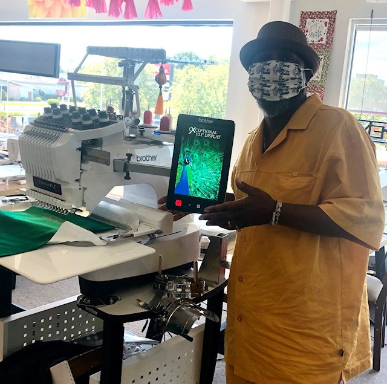
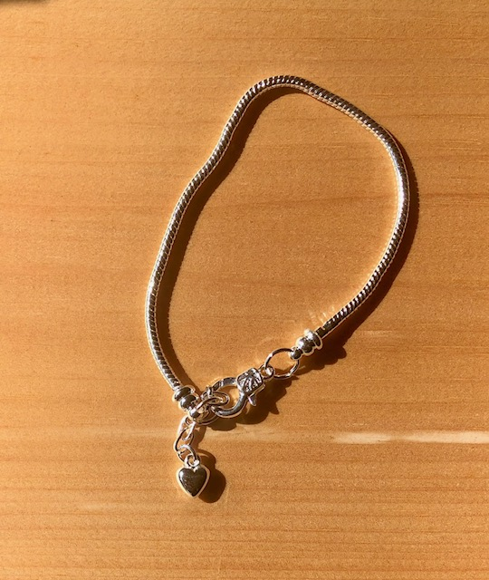
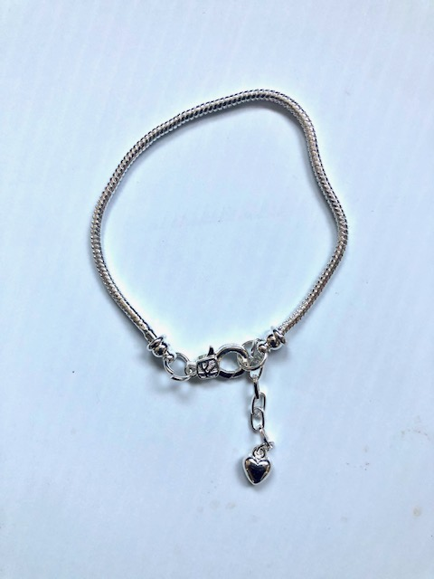
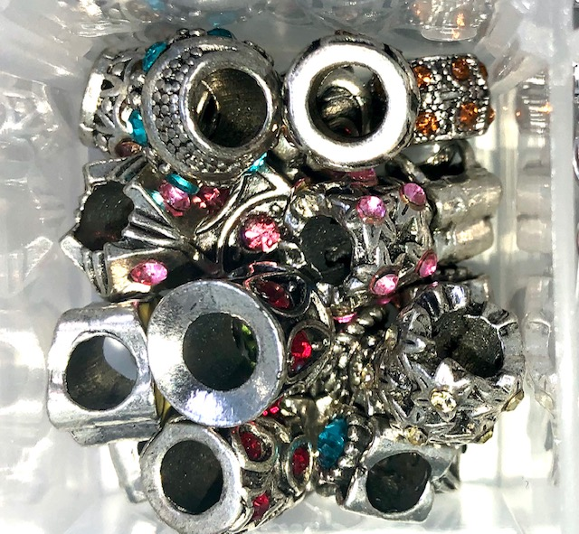
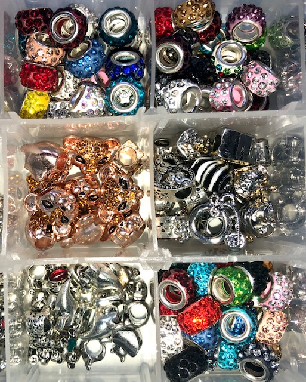
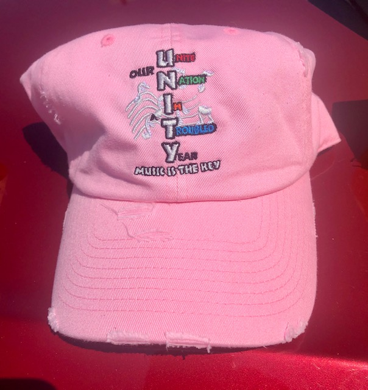
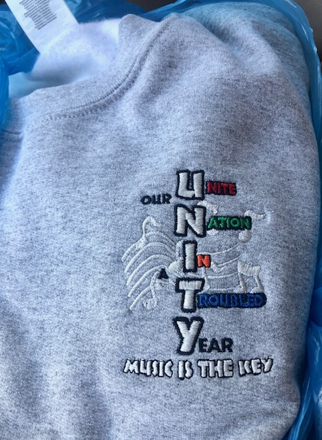
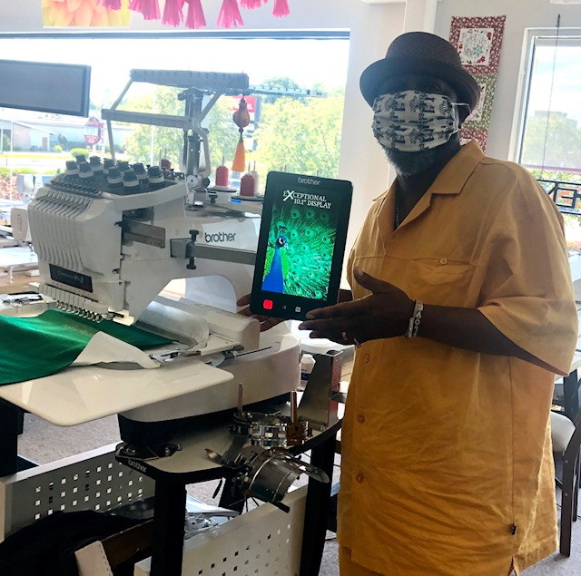